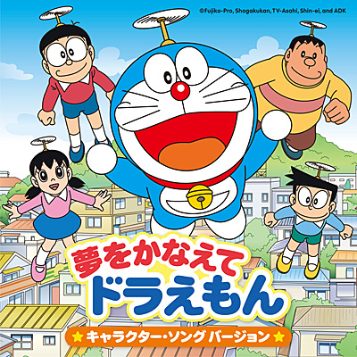
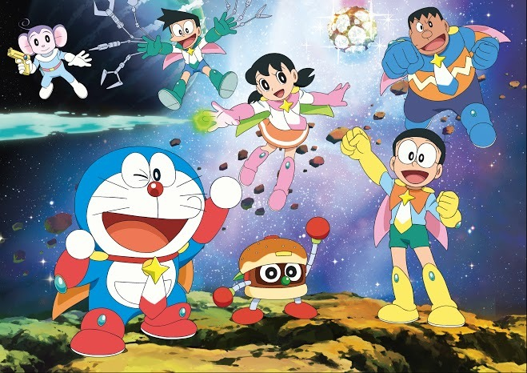
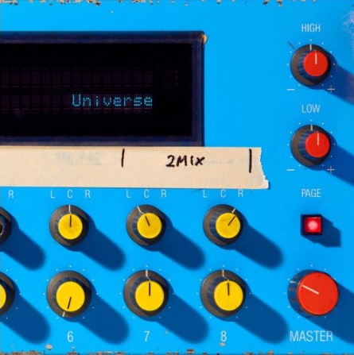
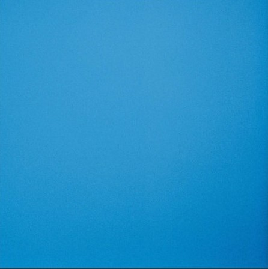
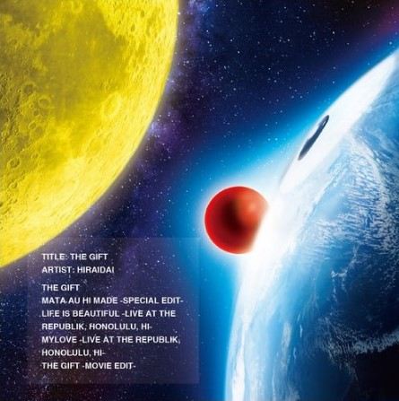

| 「哆啦A夢音樂」的哆啦A夢資料 | |
|---|---|
| 哆啦A夢音樂為數眾多、流傳甚廣，從大家都很熟悉的「ㄤ～ㄤ～ㄤ～」哆啦A夢主題曲《哆啦A夢之歌》開始，到每部哆啦A夢電影一定都有的哆啦A夢電影主題曲，哆啦A夢帶您全面了解。 | |
哆啦A夢之歌
|
|
|  | 哆啦A夢 為我實現夢想
|
|  | 哆啦A夢 為我實現夢想 (全體人員)
|
|  | Universe
|
虹
|
|
|  | Birthday
|
|  | THE GIFT
|
給不在這裡的你
|
|
打造我的心
|
|
伊姆與阿姆之歌アムとイムのうた
| |